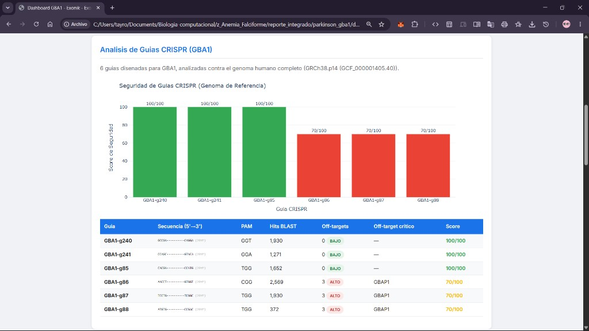
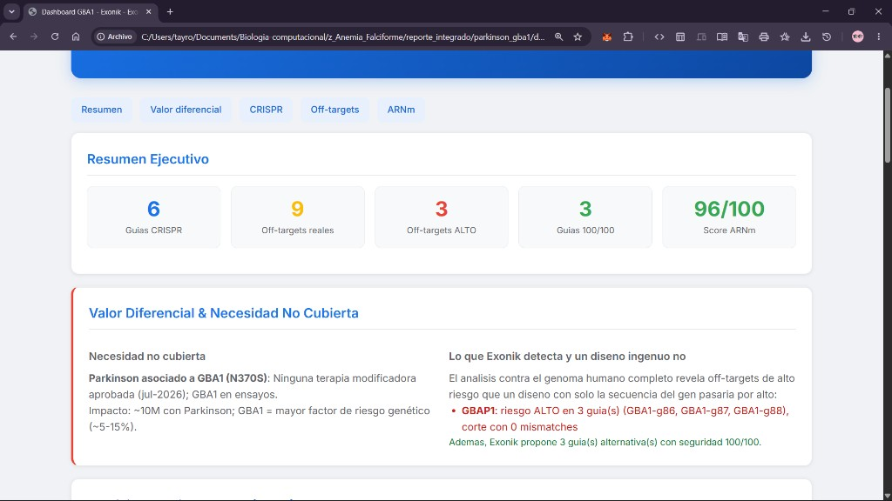
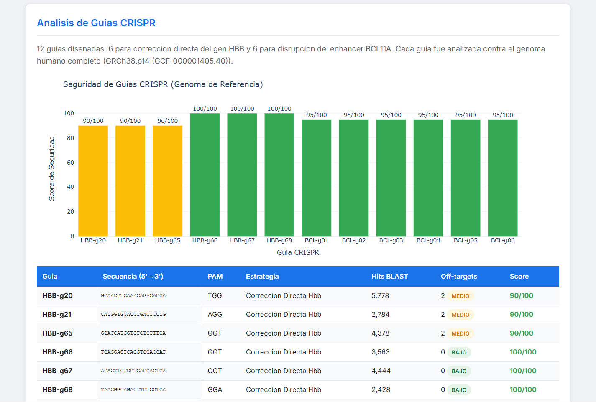
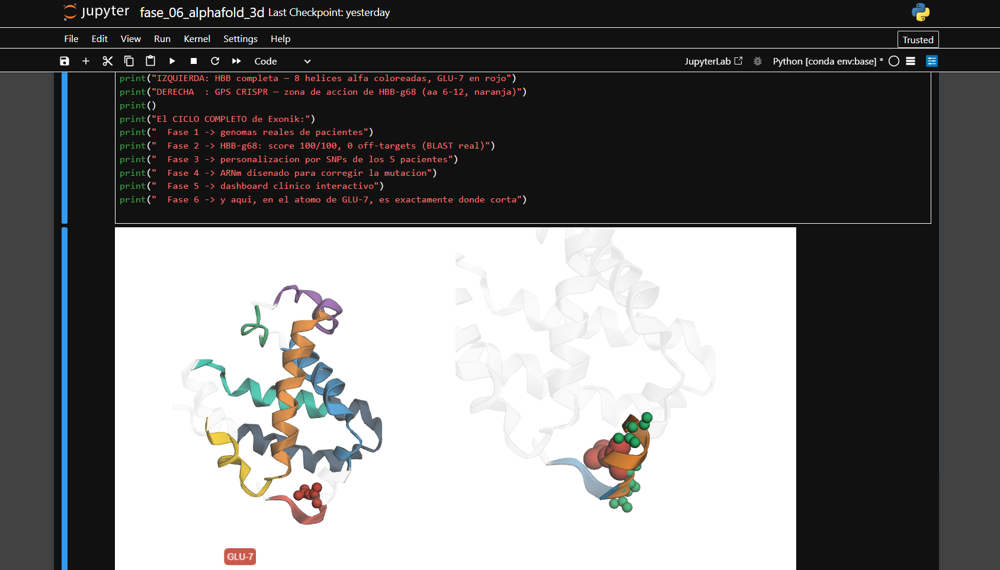

EXONIK is a computational platform that designs precision, patient-personalizable gene therapies — from raw genomic data to clinical report. Flagship target: Parkinson's disease (GBA1), a high-impact disease with no approved disease-modifying therapy.
"The same CRISPR guide safe for one patient can be dangerous for another — because their genomes are different."
Parkinson's disease affects around 10 million people worldwide, and as of July 2026 there is no approved disease-modifying therapy — every treatment on the market only manages symptoms. The single largest genetic risk factor is the GBA1 gene, implicated in roughly 5–15% of cases.
GBA1 sits ~16 kb from a pseudogene, GBAP1, with ~96% sequence identity. Any CRISPR guide designed for GBA1 looks almost identical to regions of GBAP1 — a natural minefield of near-identical off-targets. A guide that appears "clean" against the gene alone can, in reality, cut the pseudogene.
This is exactly where EXONIK's engine delivers its differential value: real off-target analysis against the whole genome, plus patient-level SNP personalization.
A conventional "design a guide on the gene sequence" approach would ship guides GBA1-g86/g87/g88 as reasonable candidates. EXONIK ran each guide against the entire GRCh38 reference genome and found the hidden danger.

Nobody is doing genome-wide, patient-personalized off-target screening at scale for these targets. That is EXONIK's opportunity.
EXONIK is disease-agnostic by design. The core logic — CRISPR design, off-target BLAST, mRNA design, dashboards — is shared. Each disease is a self-contained module defined by a standard schema. Switching targets is a single environment variable.
| Disease | Gene | Variant | Role in EXONIK |
|---|---|---|---|
| Parkinson (GBA1) | GBA1 | N370S · rs76763715 | Flagship Unmet need + GBAP1 differentiator |
| Sickle Cell Disease | HBB | rs334 · GAG→GTG | Validated baseline 5 real patients, full personalization |
| Beta-Thalassemia | HBB | β⁺ / β⁰ | Modularity proof Same gene, different variant |
Precision at the variant — design for the exact disease-causing mutation. Personalization at the patient — adapt the safety profile to each individual genome.
Where drug discovery patches a misfolded protein at runtime, EXONIK operates at the most upstream point possible — the genome itself — to fix or restore the code that builds the protein.
EXONIK treats DNA as a language. Today it already runs deep learning for 3D structure (AlphaFold), and its decoupled, JSON-driven engine is built to plug in transformer-based genomic language models — models that read nucleotide sequences to predict cut sites, binding affinity and gRNA/mRNA efficiency. Deterministic where exactness wins (BLAST, thermodynamics); learned where biology has no closed formula. Predictive ML layer (patient variants + epigenetics): on the roadmap.
Both approaches use AI and structural biology. But drug discovery treats the symptom; gene therapy fixes the cause.
| Drug discovery (e.g. Isomorphic Labs) | EXONIK (gene therapy) | |
|---|---|---|
| Target | Protein surface (downstream) | DNA / mRNA (upstream) |
| Action | Design a molecule to bind / block the protein | Edit the genome / restore the missing protein |
| Duration | Chronic (repeated dosing) | One-time correction / durable restoration |
| Personalization | Same drug for all patients | Each patient's genome analyzed |
| Analogy | Patching a bug at runtime | Fixing the source code |
"The best way to fix a bug is not to write a better error handler — it's to fix the line of code that causes it."
| Target gene | GBA1 (chr1) — N370S |
| Approved therapy | None (Jul 2026) |
| CRISPR guides designed | 6 vs full GRCh38 |
| Perfect-safety guides | 3 — 0 off-targets, 100/100 |
| HIGH-risk off-targets | 3 — all inside GBAP1 |
| Therapeutic mRNA | 96/100 (GCasa, 536 aa) |
| AUG accessibility | 100/100 |
| Immunogenicity | Very low (endogenous) |
| Delivery | LNP → IV, BBB-crossing ligands |
| Real patients analyzed | 5 (3 continents) |
| CRISPR guides designed | 12 (HBB + BCL11A) |
| Off-targets found (BLAST) | 12 (chr2, 11, 14) |
| Personalization coverage | 12/12 × 5 patients |
| Best guide | HBB-g68 — 100/100 |
| Therapeutic mRNA | 96/100 |
| 3D visualizations | 4 interactive HTML |
| Cohorts | Nigeria, Gambia, Colombia, PR, Caribbean |
| Genome-to-atom mapping | Guide → GLU-7 cut site |
Self-contained, interactive reports — no server required. Open them directly in the browser.

Executive summary, differential-value narrative, GBA1-vs-GBAP1 guide safety and therapeutic mRNA metrics.
Open dashboard
12 CRISPR guides, genomic off-target map and the patient × guide personalization heatmap across the 5-patient cohort.
Open dashboard
Open interactive 3DGuides designed and BLASTed against the full GRCh38 genome; GBAP1 off-targets detected.
Codon optimization, secondary structure, immunogenicity and stability — 96/100 for functional GCasa.
Disease-agnostic engine; new targets added by configuration.
Cross the GBAP1 off-targets with each patient's real SNPs — "is this guide safe for this genome?"
GCasa structure (AlphaFold, UniProt P04062) with the N370S site highlighted.
Transformer-based models that read DNA as language to predict cut efficiency and off-target risk per patient, plus agents that learn gene interactions in polygenic disease — served at scale.
Gene-addition (AAV) leads on delivery. EXONIK is the design-and-safety layer that sits on top of any modality — it designs the optimized therapeutic sequence and, critically, catches the near-identical off-targets (like GBAP1) that a gene-only approach would miss.
All designs are computational (in silico) and require experimental validation. mRNA offers fast proof-of-concept but transient expression; durable CNS restoration likely favors AAV — a transgene EXONIK also designs. Delivery across the blood-brain barrier remains the central challenge.